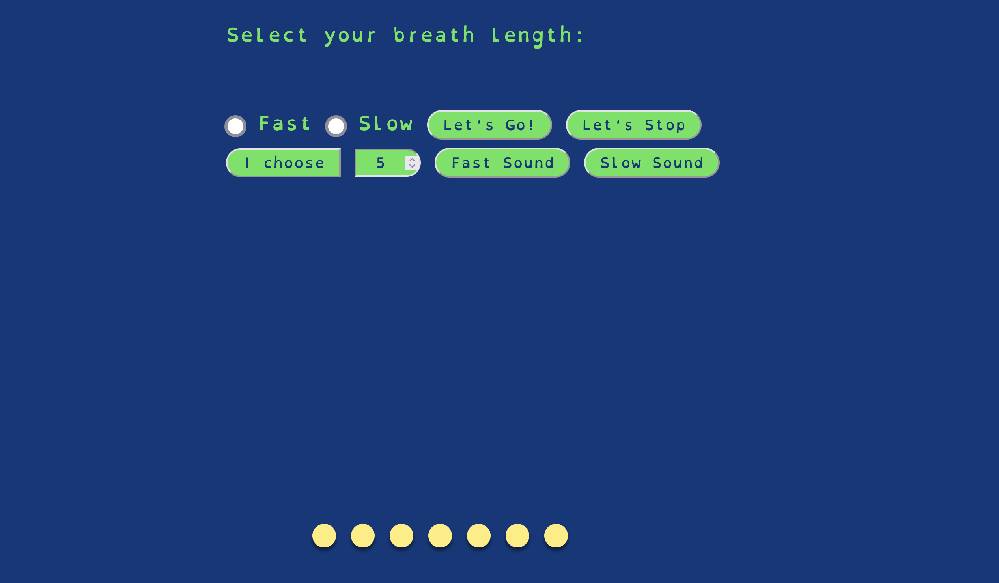

I'm a student in Perficient's BrightPaths program at DevMountain. I'm learning new-to-me technology every day and appreciating how it shows up in our everyday lives. I thrive on above-and-beyond customer service, authentic team relationships and opportunities to excel.
About Me
Latest Projects

Capstone
https://breathewithme.herokuapp.com/
This is the half-way capstone project I created after seven weeks of code instruction. I wanted to create a tool for people to relax with mindful breathing. I was especially interested in accessibility and reaching as many users as possible.
There are fast and slow rates of breath for people with different lung capacities--like kids and adults. I used a color scheme that's easy to see outside, at the park, for example, and included audio version for people with vision limitations or those who are auditory-dominant. I made the user interface as easy as possible, given the project requirements. See--or hear!--what you think! I've included the introduction video below.

Storm Drain Hero--an app for community participation in storm water management.
An exercise in get, post, put and delete!

A Java lab with an emphasis on classes, inheritance and file-write.
This may give you a craving...
Land on Mars, pick a vehicle, create an object and play a for-loop guessing game.
This was one of the first Java labs I did, with some attention to public and private classes.
Work and Volunteer Experience
Communications Specialist - St. Luke Presbyterian Church (2016)
- Limited-term position for a small non-profit.
- Created, tracked, analyzed and reported on email and social media campaigns
- Developed and built a new website hosted on Squarespace.
Executive Board Member, including President - Deephaven PTA (2011 - 2014)
- Oversight of $80,000 budget, active management and support of 50+ volunteers
- Chaired monthly leadership and bi-monthly member meetings
- Wrote weekly updates for circulation to 700+ recipients
Personal Trainer, LifeTime Fitness - (2018 - 2019)
- Created customized exercise plans based on assessments and stated goals
- Demonstrated, monitored, and adapted or progressed all exercises in each plan
Private Chiropractic Practice Minnetonka, MN (Intermittently between 2003 - 2011)
- Accurately diagnosed patients’ conditions and developed treatment plans
- Employed a variety of therapeutic techniques, including patient education for independent exercise.